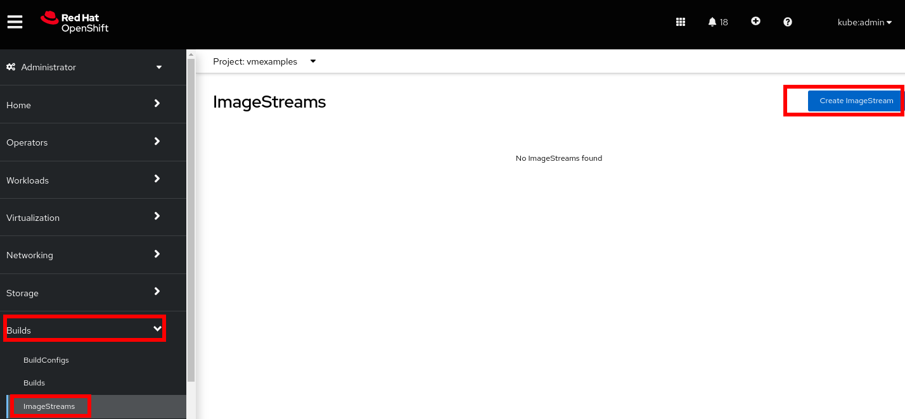
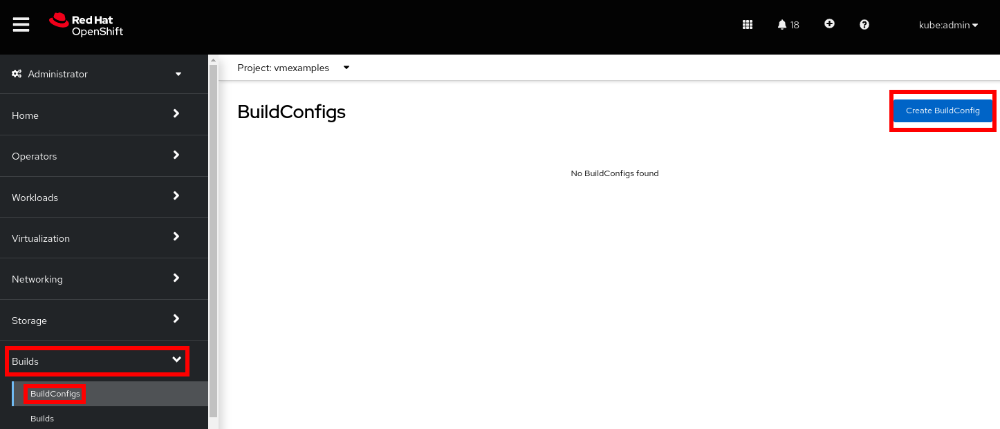
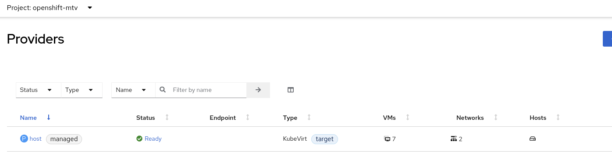
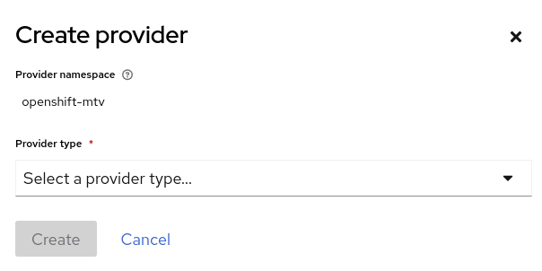
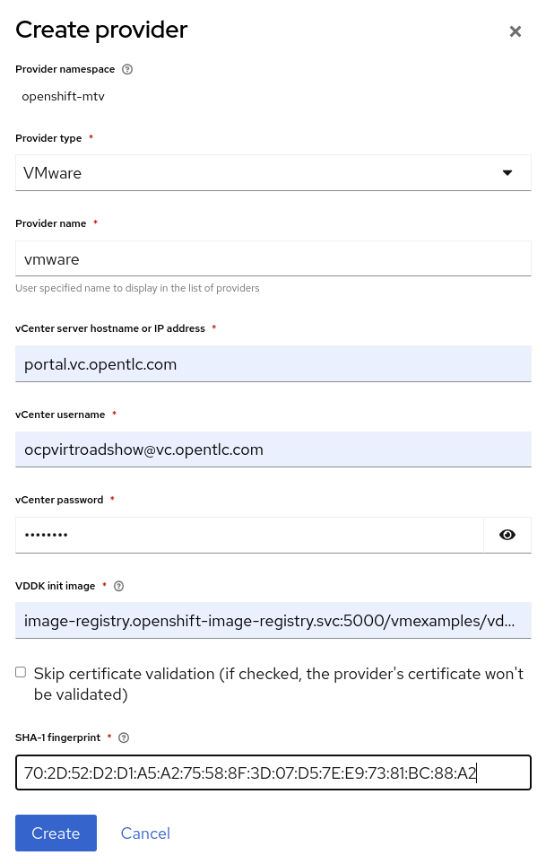
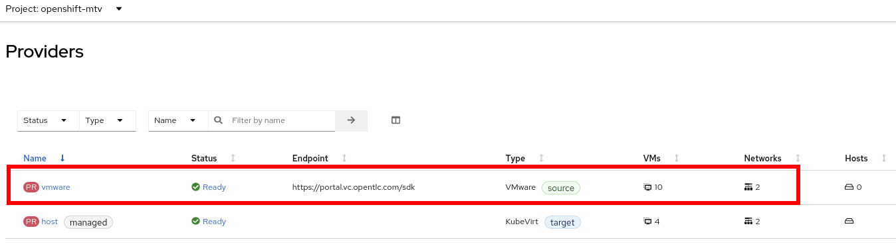

Add a VMware vSphere source provider and connect to VMware provider
Prerequisites for the VMware Provider
The following prerequisites apply to all migrations:
-
ISO/CD-ROM disks must be unmounted.
-
Each NIC must contain one IPv4 and/or one IPv6 address.
-
The VM operating system must be certified and supported for use as a guest operating system with OpenShift Virtualization.
-
VM names must contain only lowercase letters (a-z), numbers (0-9), or hyphens (-), up to a maximum of 253 characters. The first and last characters must be alphanumeric. The name must not contain uppercase letters, spaces, periods (.), or special characters.
-
VM names must not duplicate the name of an existing VM in the OpenShift Virtualization environment.
The Migration Toolkit for Virtualization will automatically assign a new name to a VM that does not comply with the rules. If this happens, MTV will automatically generate a new VM name to allow the migration to proceed smoothly.
Create the VMware provider to the migration toolkit
The Migration Toolkit for Virtualization (MTV) uses the VMware Virtual Disk Development Kit (VDDK) SDK to transfer virtual disks from VMware vSphere.
You must download the VMware Virtual Disk Development Kit (VDDK), build a VDDK image, and push the VDDK image to your image registry. You need the VDDK init image path in order to add a VMware source provider.
| Storing the VDDK image in a public registry might violate the VMware license terms. |
| If you want to configure in your lab then you can create ImageStreams and BuildConfigs. |
Create ImageStreams and BuildConfigs
-
Navigate to Builds → ImageStreams
-
Press Create ImageStream
 -
Replace the YAML content with the following code:
apiVersion: image.openshift.io/v1 kind: ImageStream metadata: name: vddk namespace: vmexamples -
Navigate to Builds → BuildConfigs
-
Press Create BuildConfig and select the YAML view radio button at the top.
 -
Replace the YAML content with the following code
kind: BuildConfig apiVersion: build.openshift.io/v1 metadata: name: vddk-build namespace: vmexamples spec: output: to: kind: ImageStreamTag name: 'vddk:latest' strategy: type: Docker dockerStrategy: from: kind: ImageStreamTag namespace: openshift name: 'tools:latest' source: type: Dockerfile dockerfile: | FROM registry.access.redhat.com/ubi8/ubi-minimal RUN curl -L -O www.opentlc.com/download/ocp4_baremetal/VMware-vix-disklib-7.0.3-20134304.x86_64.tar.gz RUN tar -xzf VMware-vix-disklib-7.0.3-20134304.x86_64.tar.gz RUN mkdir -p /opt ENTRYPOINT ["cp", "-r", "/vmware-vix-disklib-distrib", "/opt"] triggers: - type: ImageChange imageChange: {} - type: ConfigChange -
Navigate to Builds → Builds and wait until the build status is Complete.
Add VMWare Provider
| In this demo lab, VMware provider is already added. If you are performing this on your own setup then you can follow the below instructions to add VMware provider. |
-
Navigate in the left menu to Migration → Providers for virtualization
-
Select project
openshift-mtv -
By default, there is a provider called
hostwhich represents the OpenShift Virtualization as a target platformHowever, you will need to register the source vCenter system to the Migration Toolkit for Virtualization as a new provider.
-
Press Create Provider button in the top right. A dialog box will appear.
 -
Select VMware on the Provider type dropdown and fill the following data:
-
Name:
vmware -
vCenter host name or IP address:
portal.vc.opentlc.com -
vCenter user name:
vcenter_user -
vCenter password:
vcenter_password -
VDDK init image:
image-registry.openshift-image-registry.svc:5000/openshift/vddk:latest -
SHA-1 fingerprint:
C7:BF:C2:DD:CD:73:1C:22:DC:D1:5A:DD:EA:64:21:C1:97:FB:F0:9C
-
-
Press Create and wait till the Status column is changed to
Ready
Now MTV knows about your VMware vSphere environment and can connect to it.